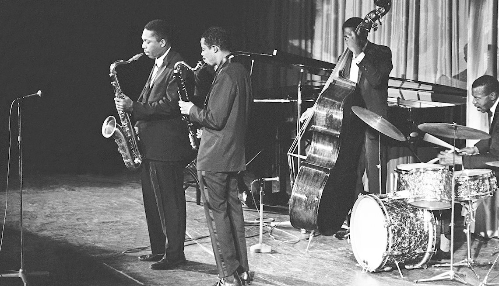

História do Coltrane:John Coltrane, nascido em 23 de setembro de 1926 em Hamlet, Carolina do Norte, e falecido em 17 de julho de 1967 em Nova York, foi um dos músicos mais influentes e inovadores na história do jazz. Sua jornada musical é uma narrativa fascinante de dedicação, evolução artística e busca espiritual. Coltrane cresceu em uma família musicalmente inclinada. Seu pai tocava violino e sua mãe era cantora de igreja. Ele começou a tocar saxofone quando era adolescente e logo se destacou como um talento excepcional. Durante sua juventude, ele foi inspirado por músicos como Lester Young e Charlie Parker, e passou muitas horas estudando e praticando para aprimorar suas habilidades. Sua carreira profissional decolou na década de 1950, quando ele começou a tocar com grandes nomes do jazz, como Dizzy Gillespie e Miles Davis. Ele rapidamente se estabeleceu como um dos principais saxofonistas tenores do jazz e começou a desenvolver seu próprio estilo único e inovador. Na década de 1960, Coltrane entrou em uma fase de intensa experimentação e busca espiritual. Ele começou a explorar conceitos musicais mais abstratos e modais, abandonando estruturas harmônicas tradicionais em favor de improvisação mais livre e expressiva. Seu álbum "Giant Steps", lançado em 1960, é considerado um marco importante na história do jazz e demonstra sua habilidade técnica excepcional e sua criatividade como compositor. No ápice de sua carreira, Coltrane liderou seu próprio quarteto e gravou uma série de álbuns revolucionários, incluindo "A Love Supreme" (1965), um trabalho profundamente espiritual que reflete sua devoção ao jazz como uma forma de expressão religiosa. Este álbum é amplamente considerado uma obra-prima e uma das maiores realizações na história do jazz. Infelizmente, a vida de Coltrane foi interrompida precocemente quando ele faleceu aos 40 anos de idade devido a complicações relacionadas ao câncer. No entanto, seu legado musical perdura até os dias de hoje. Sua música continua a inspirar músicos e amantes do jazz em todo o mundo, e seu impacto duradouro na música e na cultura é inegável. John Coltrane é lembrado não apenas como um grande músico, mas como uma figura icônica que transcendeu os limites do jazz e tocou os corações de milhões com sua música profunda e espiritual. |
|
ABC-Paramount Records | |